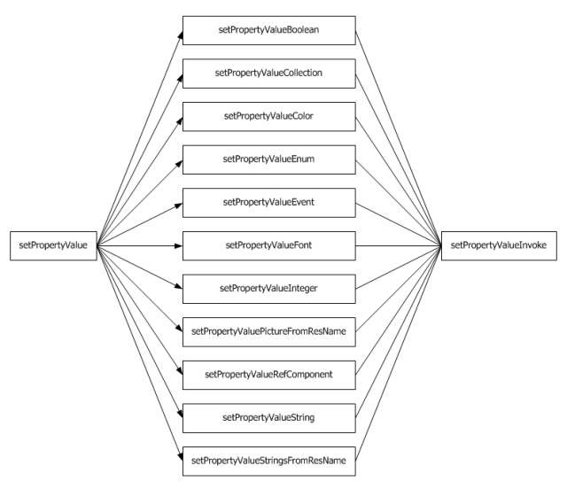

Persistents
This is an introduction of the IusCLPersistent. A persistent is a class that can be serialized in an iusclfm file. It has properties. A property is a way to persist a value, by giving a name, and by name finding the getter and the setter.

Then, the components are the basic blocks.
Components
This is an introduction of the IusCLComponent. A component is a persistent which has a name, and is a "component" of a form. There are persistents which are not components, like the collection items, such as the columns of a ListView. They will be persisted, but cannot exist by their own. They are not created in the constructor, but in theirs "setParent" function.
Controls
This is an introduction of the IusCLControl. A control is a visual component. It can be put on a form. It has mouse events. An IusCLWinControl is a control which can have focus, has keyboard events and tab, such as IusCLButton. An IusCLGraphicControl is a control that is just a painting, such as an IusCLImage.
The components which are not controls are the non-visual ones, such as dialogs and timers.
To be detailed..